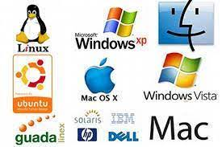

El sistema operativo es el software que coordina y dirige todos los servicios y aplicaciones que utiliza el usuario en una computadora, por eso es el más importante y fundamental. Se trata de programas que permiten y regulan los aspectos más básicos del sistema. Los sistemas operativos más utilizados son Windows, Linux, OS/2 y DOS.
Los sistemas operativos, también llamados núcleos o kernels, suelen ejecutarse de manera privilegiada respecto al resto del software, sin permitir que un programa cualquiera realice cambios de importancia sobre él que puedan comprometer su funcionamiento.
El sistema operativo es el protocolo básico de operatividad del computador, que coordina todas sus demás funciones de comunicaciones, de procesamiento, de interfaz con el usuario.
Los sistemas operativos consisten en interfaces gráficas, entornos de escritorio o gestores de ventanas que brindan al usuario una representación gráfica de los procesos en marcha. También puede ser una línea de comandos, es decir, un conjunto de instrucciones ordenado según su prioridad y que funciona en base a órdenes introducidas por el usuario.
Las primeras versiones de las computadoras no tenían sistemas operativos. En la década de los sesenta los ordenadores usaban procesamientos por lotes y fue durante estos años cuando comenzaron a desarrollarse los sistemas operativos.
Si bien a partir de los ochenta ya habían comenzado a surgir algunos muy conocidos, a partir de los noventa estos programas comenzaron a ser más flexibles y fuertes. Uno de los grandes hitos fue el lanzamiento de Windows 95.
¿Para qué sirve un sistema operativo?
Los sistemas operativos permiten que otros programas puedan utilizarlos de apoyo para poder funcionar. Por eso, a partir del sistema utilizado pueden ser instalados ciertos programas y otros no.
Son parte esencial del funcionamiento de los sistemas informáticos y la pieza de software central en la cadena de procesos, ya que establecen las condiciones mínimas para que todo funcione: la administración de los recursos, el método de comunicación con el usuario y con otros sistemas, las aplicaciones adicionales.

Componentes de un sistema operativo
El sistema operativo posee tres componentes esenciales o paquetes de software que permiten la interacción con el hardware:
Sistema de archivos. Es el registro de archivos donde adquieren una estructura arbórea.
Interpretación de comandos. Se logra con aquellos componentes que permiten la interpretación de los comandos, que tienen como función comunicar las órdenes dadas por el usuario en un lenguaje que el hardware pueda interpretar (sin que aquel que dé las órdenes conozca dicho lenguaje).
Núcleo. Permite el funcionamiento en cuestiones básicas como la comunicación, entrada y salida de datos, gestión de procesos y la memoria, entre otros.
Esto te servirá para delimitar el tipo de soporte que necesitarás y, más adelante, documentar los procesos a seguir.
Funciones de un sistema operativo
Gestionar la memoria de acceso aleatorio y ejecutar las aplicaciones, designando los recursos necesarios.
Administrar al CPU gracias a un algoritmo de programación.
Direccionar las entradas y salidas de datos (a través de drivers) por medio de los periféricos de entrada o salida.
Administrar la información para el buen funcionamiento de la PC.
Dirigir las autorizaciones de uso para los usuarios.
Administrar los archivos.
Características de un sistema operativo
Es el intermediario entre el usuario y el hardware.
Es necesario para el funcionamiento de todos los computadores, tabletas y teléfonos móviles.
Otorga seguridad y protege a los programas y archivos del ordenador.
Está diseñado para ser amigable con el usuario y fácil de usar.
Permite administrar de manera eficiente los recursos del ordenador.
La mayoría requiere del pago de una licencia para su uso.
Permite interactuar con varios dispositivos.
Es progresivo, ya que existen constantemente nuevas versiones que se actualizan y adaptan a las necesidades del usuario.
Tipos de sistema operativo
Los tipos de sistema operativo varían según el hardware y la función de cada dispositivo. Existen algunos para ordenadores y otros para dispositivos móviles.
Según el usuario pueden ser: multiusuario, sistema operativo que permite que varios usuarios ejecuten simultáneamente sus programas; o monousuario, sistema operativo que solamente permite ejecutar los programas de un usuario a la vez.
Según la gestión de tareas pueden ser: monotarea, sistema operativo que solamente permite ejecutar un proceso a la vez; o multitarea, sistema operativo que puede ejecutar varios procesos al mismo tiempo.
Según la gestión de recursos pueden ser: centralizado, sistema operativo que solo permite utilizar los recursos de un solo ordenador; o distribuido, sistema operativo que permite ejecutar los procesos de más de un ordenador al mismo tiempo.